Prototype Race Car Body


Full body of a prototype race car scanned, rebuilt as CAD and checked against the scan.
Portfolio
Manufactured parts scanned and compared with their CAD, so you see exactly where a part is in or out of tolerance — fast, full-surface and without contact.
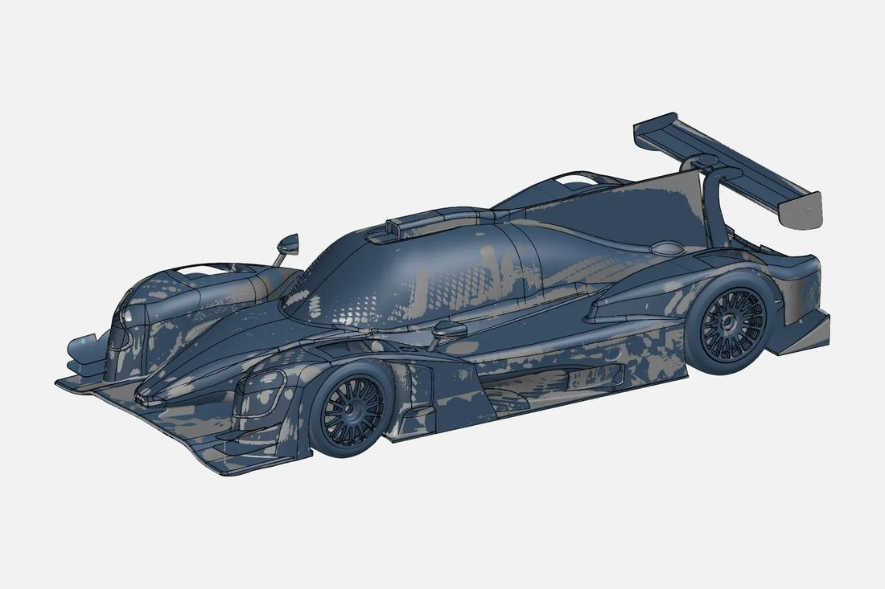
Shown: Prototype Race Car Body
Compare manufactured parts to their CAD — to the micron.
We inspect manufactured parts by scanning them and comparing the result against the nominal CAD. Colour deviation maps, GD&T checks and first-article reports show exactly where a part is in or out of tolerance — fast, and without contact.
Full-surface comparison against CAD, instantly showing where material is over or under.
Flatness, position, profile and more, measured and reported against the drawing.
Complete FAI reports for new parts, tools and suppliers.
Repeated inspections track tool wear and process drift over time.
Scan to solution in four steps.
We scan the part, product or site — in our lab or on location.
Scans are aligned, cleaned and merged into usable, watertight data.
CAD, Class A surfaces, BIM or inspection built from that data.
CAD files, drawings and reports in the formats your team uses.
For most castings, moulded parts and freeform surfaces, yes. For micron-level machined features, a CMM is still the better tool, and many companies combine both.
The part (or access to it on site), the CAD model, and the drawing or tolerances to check against. If there is no CAD, we can compare two parts against each other, or against a "golden" sample.
Scanning a typical part takes minutes to an hour. Reporting depends on how many features and GD&T checks you need.
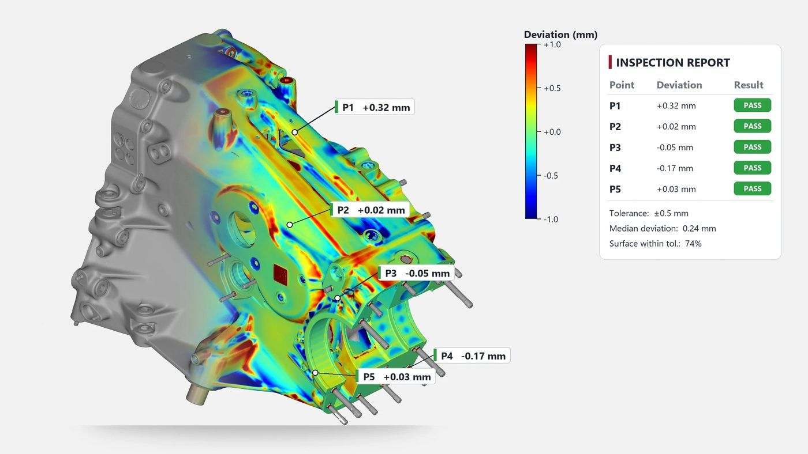
Real parts scanned and engineered by the VShark team.
Full body of a prototype race car scanned, rebuilt as CAD and checked against the scan.
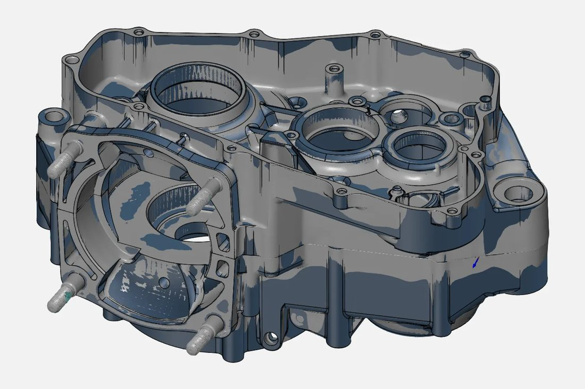


Complex crankcase casting digitised and remodelled, with a deviation overlay.
Real parts scanned and engineered by the VShark team.
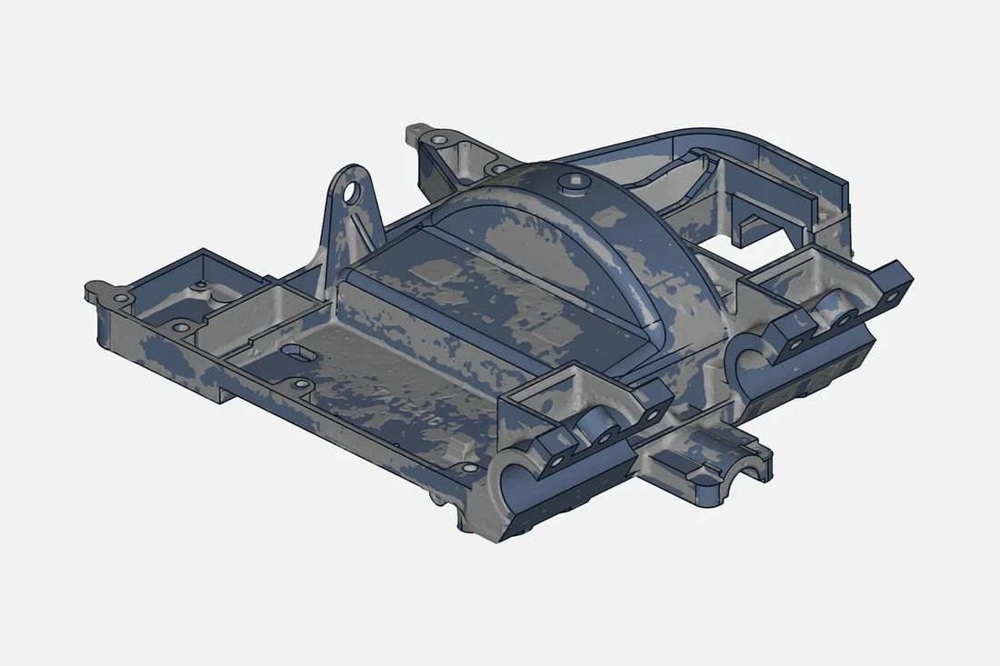


Transmission housing casting scanned, modelled and compared against the CAD.
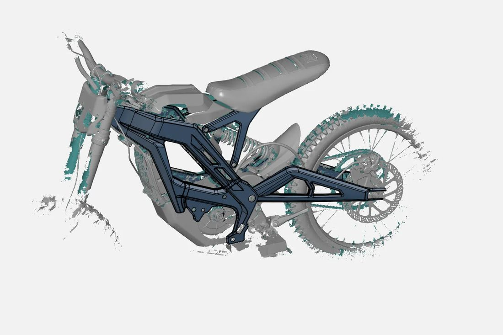


Whole bike scanned; the frame extracted and rebuilt as editable CAD.
Real parts scanned and engineered by the VShark team.
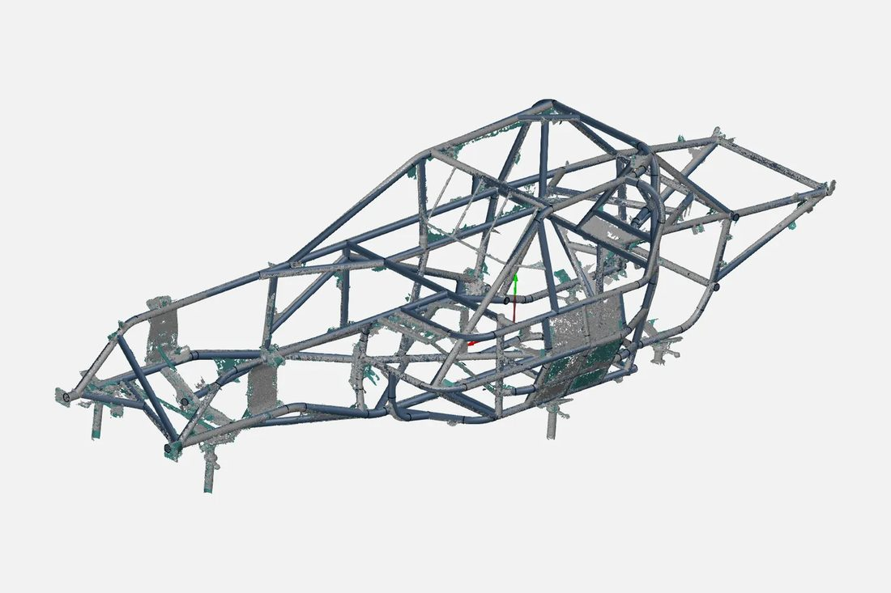


Space-frame roll cage captured tube by tube and modelled for fabrication.
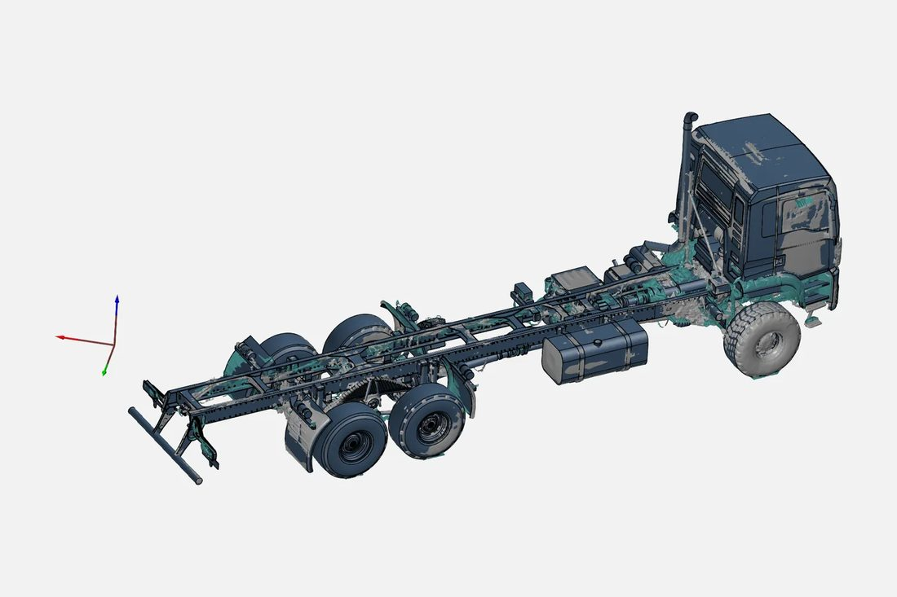


Heavy truck chassis scanned and rebuilt as a CAD assembly.
Real parts scanned and engineered by the VShark team.
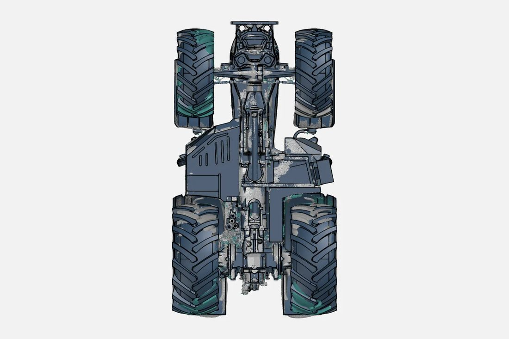


Tractor underbody digitised for redesign and packaging studies.
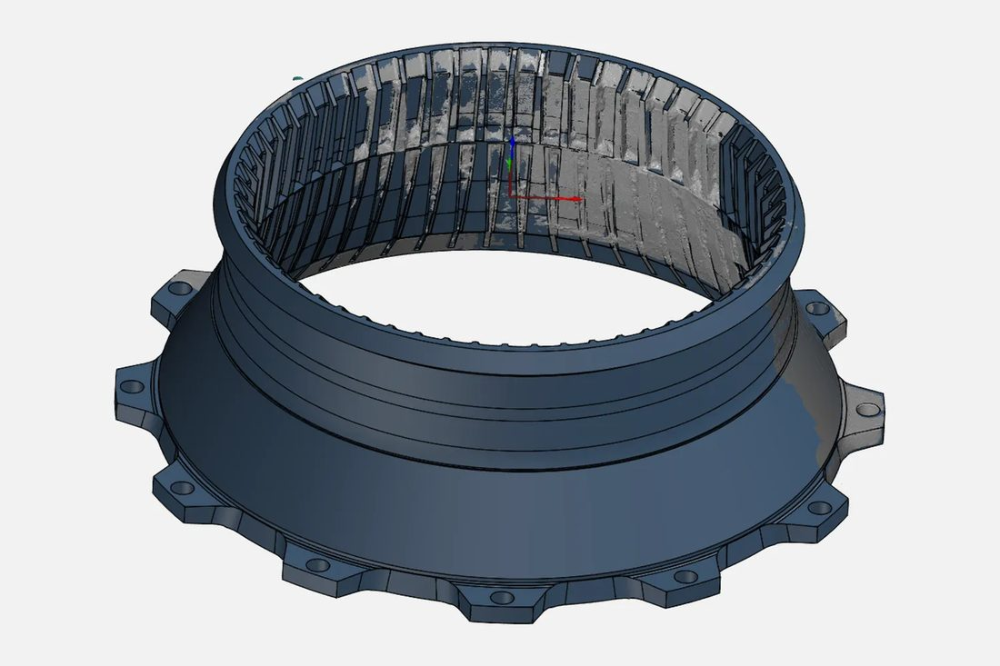


Wear liner scanned and modelled so replacements can be produced.
Real parts scanned and engineered by the VShark team.
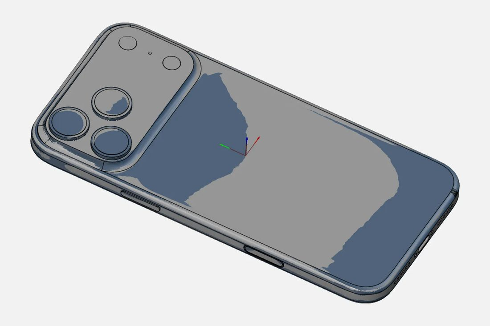


Thin-walled consumer housing captured and remodelled to design intent.
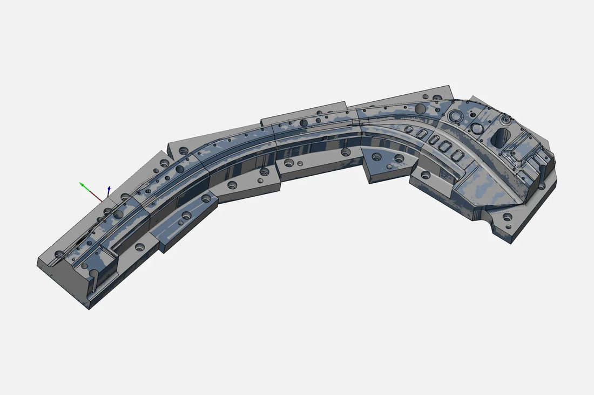


Mold insert assembly reverse-engineered for tool repair and duplication.
Real parts scanned and engineered by the VShark team.
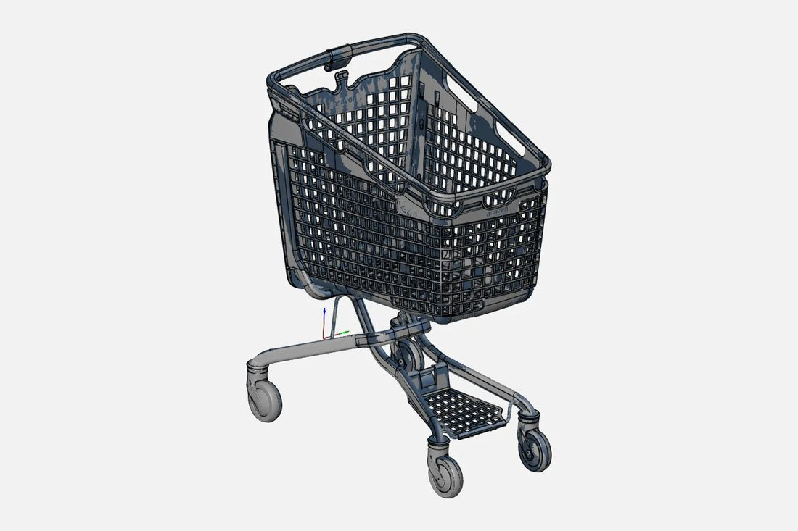


Large moulded trolley scanned and rebuilt as production CAD.
Send the part (or give us access to it on site), the CAD model, and the drawing or tolerances to check against. If there is no CAD, we can compare two parts against each other, or against a "golden" sample.
We usually reply within one working day. NDAs on request — your files are used only for your project.